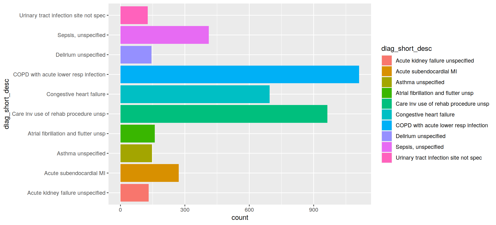
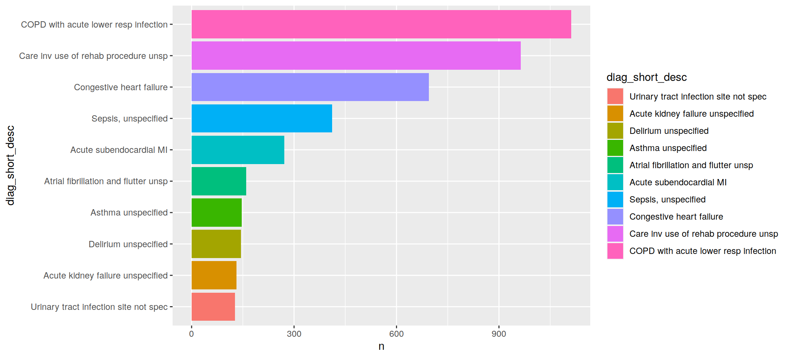

Tutorial 7 - Top N query
Last updated: 2020-05-21
Checks: 6 1
Knit directory: tutorials_workflowr/
This reproducible R Markdown analysis was created with workflowr (version 1.6.2). The Checks tab describes the reproducibility checks that were applied when the results were created. The Past versions tab lists the development history.
Great! Since the R Markdown file has been committed to the Git repository, you know the exact version of the code that produced these results.
Great job! The global environment was empty. Objects defined in the global environment can affect the analysis in your R Markdown file in unknown ways. For reproduciblity it’s best to always run the code in an empty environment.
The command set.seed(20190513) was run prior to running the code in the R Markdown file. Setting a seed ensures that any results that rely on randomness, e.g. subsampling or permutations, are reproducible.
Nice! There were no cached chunks for this analysis, so you can be confident that you successfully produced the results during this run.
Great job! Using relative paths to the files within your workflowr project makes it easier to run your code on other machines.
Great! You are using Git for version control. Tracking code development and connecting the code version to the results is critical for reproducibility.
The results in this page were generated with repository version 5c9f3d9. See the Past versions tab to see a history of the changes made to the R Markdown and HTML files.
Note that you need to be careful to ensure that all relevant files for the analysis have been committed to Git prior to generating the results (you can use wflow_publish or wflow_git_commit). workflowr only checks the R Markdown file, but you know if there are other scripts or data files that it depends on. Below is the status of the Git repository when the results were generated:
Ignored files:
Ignored: code/analysis/
Note that any generated files, e.g. HTML, png, CSS, etc., are not included in this status report because it is ok for generated content to have uncommitted changes.
These are the previous versions of the repository in which changes were made to the R Markdown (analysis/tutorial7_forcats.Rmd) and HTML (docs/tutorial7_forcats.html) files. If you’ve configured a remote Git repository (see ?wflow_git_remote), click on the hyperlinks in the table below to view the files as they were in that past version.
| File | Version | Author | Date | Message |
|---|---|---|---|---|
| html | 6cb36e8 | Dennis Wollersheim | 2020-05-20 | Build site. |
| html | 16653f3 | Dennis Wollersheim | 2020-05-20 | Build site. |
| Rmd | e025ef3 | Dennis Wollersheim | 2020-05-20 | workflowr::wflow_publish(“analysis/tutorial7_forcats.Rmd”) |
| html | 89819f3 | Dennis Wollersheim | 2020-05-19 | Build site. |
| Rmd | 6e690f6 | Dennis Wollersheim | 2020-05-19 | workflowr::wflow_publish(“analysis/tutorial7_forcats.Rmd”) |
| Rmd | 17ff3a3 | Dennis Wollersheim | 2020-05-19 | 2020 |
| html | 17ff3a3 | Dennis Wollersheim | 2020-05-19 | 2020 |
| Rmd | efb80f4 | Dennis Wollersheim | 2020-05-19 | workflowr::wflow_publish(“analysis/index.Rmd”) |
Top N queries in R
Load Libraries
# load libraries
library(knitr)
opts_chunk$set(warning=F,message=F,fig.width = 11,fig.height = 5,cache=F, echo=T)
library(tidyverse)
library("RPostgreSQL")
library("forcats")Setup Connection
# create connection to the database
con <- dbConnect(dbDriver("PostgreSQL"),
dbname = 'vaed_full',
host = "himsql7.latrobe.edu.au", port = 5432,
user = "dewollershei-test", password = "healthGuru")
#
# this is the query to get all tne pneumonia diagnois. the 3 commented lines would also finn the principal procedureSetup Query
query = "
SELECT ad_morbidity.position, ad_morbidity.diag_code, diag_short_desc, admission_id, age_years, los
FROM admission JOIN sex USING (sex_id)
JOIN admission_diagnosis ad_morbidity USING (admission_id)
JOIN diagnosis_desc USING (diag_code)
JOIN admission_diagnosis ad_pneumonia USING (admission_id)
WHERE ad_pneumonia.diag_code = 'J189'
AND ad_morbidity.position = 1
"Get data from database
we want to get rid of records with the J189, because we want the other morbidities
dbGetQuery( con, query ) %>%
as_tibble() %>%
filter( diag_code != 'J189') %>%
{ . } -> morbiditiesWhat are the morbidites that have an additional diagnosis of pneumonia
note, there are 1400 morbidities
morbidities %>%
count( diag_short_desc, sort=TRUE)# A tibble: 1,263 x 2
diag_short_desc n
<chr> <int>
1 COPD with acute lower resp infection 1112
2 Care inv use of rehab procedure unsp 964
3 Congestive heart failure 695
4 Sepsis, unspecified 411
5 Acute subendocardial MI 271
6 Atrial fibrillation and flutter unsp 160
7 Asthma unspecified 147
8 Delirium unspecified 144
9 Acute kidney failure unspecified 131
10 Urinary tract infection site not spec 127
# … with 1,253 more rowsmorbidities %>%
ggplot( aes( x=diag_short_desc )) +
geom_bar()
| Version | Author | Date |
|---|---|---|
| 89819f3 | Dennis Wollersheim | 2020-05-19 |
What can we do about this?
We can lump together the smaller categories into an ‘other’ category
morbidities %>%
filter( diag_code != 'J189') %>%
mutate( diag_short_desc = fct_lump_prop(diag_short_desc,0.05)) %>%
count( diag_short_desc, sort=TRUE)# A tibble: 4 x 2
diag_short_desc n
<fct> <int>
1 Other 7486
2 COPD with acute lower resp infection 1112
3 Care inv use of rehab procedure unsp 964
4 Congestive heart failure 695morbidities %>%
filter( diag_code != 'J189') %>%
mutate( diag_short_desc = fct_lump_n(diag_short_desc,10)) %>%
count( diag_short_desc, sort=TRUE)# A tibble: 11 x 2
diag_short_desc n
<fct> <int>
1 Other 6095
2 COPD with acute lower resp infection 1112
3 Care inv use of rehab procedure unsp 964
4 Congestive heart failure 695
5 Sepsis, unspecified 411
6 Acute subendocardial MI 271
7 Atrial fibrillation and flutter unsp 160
8 Asthma unspecified 147
9 Delirium unspecified 144
10 Acute kidney failure unspecified 131
11 Urinary tract infection site not spec 127Graphing it
morbidities %>%
filter( diag_code != 'J189') %>%
mutate( diag_short_desc = fct_lump_n(diag_short_desc,10)) %>%
filter(diag_short_desc != 'Other') %>%
ggplot( aes( x=diag_short_desc, fill=diag_short_desc )) +
geom_bar()+
coord_flip()
| Version | Author | Date |
|---|---|---|
| 89819f3 | Dennis Wollersheim | 2020-05-19 |
Graph is better if ordered by largest values
We need to count the morbidities first, so we know how to order them. Once they are counted, we use geom_col to graph them
morbidities %>%
filter( diag_code != 'J189') %>%
mutate( diag_short_desc = fct_lump_n(diag_short_desc,10)) %>%
filter(diag_short_desc != 'Other') %>%
count( diag_short_desc) %>%
mutate( diag_short_desc = fct_reorder(diag_short_desc, n)) %>%
ggplot( aes( x=diag_short_desc, y = n, fill=diag_short_desc )) +
geom_col()+
coord_flip()
| Version | Author | Date |
|---|---|---|
| 89819f3 | Dennis Wollersheim | 2020-05-19 |